- 액티비티
- 단양은 하늘을 누비는 다양한 엑티비티를 경험할 수 있는 곳이다. 패러글라이딩은 물론 스카이워크 전망대까지 짜릿함을 느낄 수 있다.
-
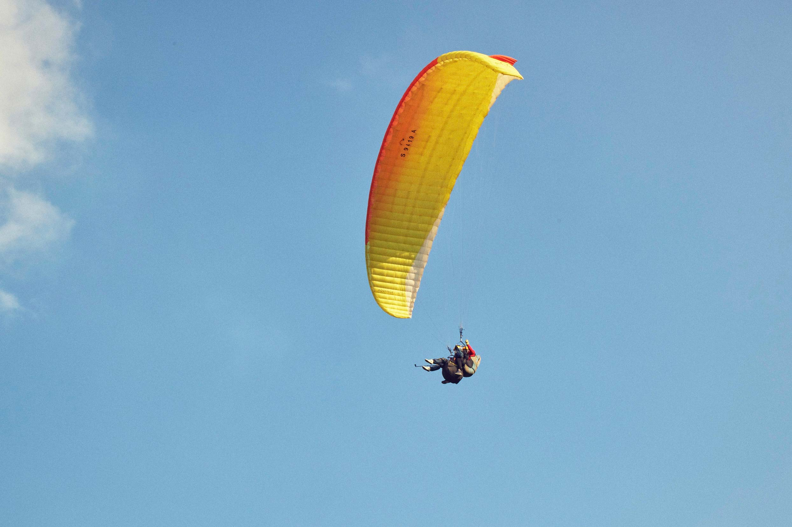
더쎈패러글라이딩 @thessenpara
국내유일 아시안게임 금,은,동 메달리스트가 운영하는 곳이다. 다양한 코스로 구성되어 있어, 원하는 코스를 고를 수 있다.
-
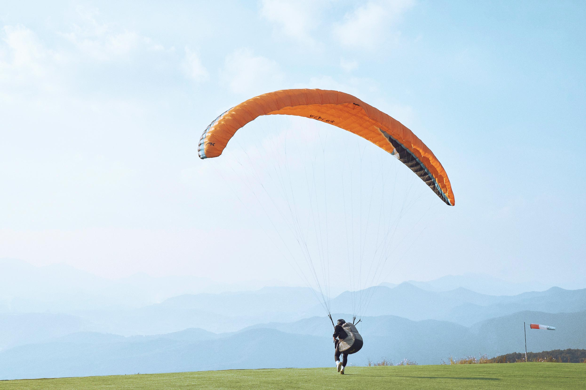
패러에 반하다 @dypara_love
아이들도 탈 수 있어 가족단위로 방문하기 좋은 곳반려견도 동반할 수 있는 곳으로 인생사진 찍기 최적인 곳이다.
-
패러마을 @paravillage
펜션과 함께 운영되어 숙박과 엑티비티를 한번에 해결할 수 있다. 전용 이륙장이 완비되어 있다.
-
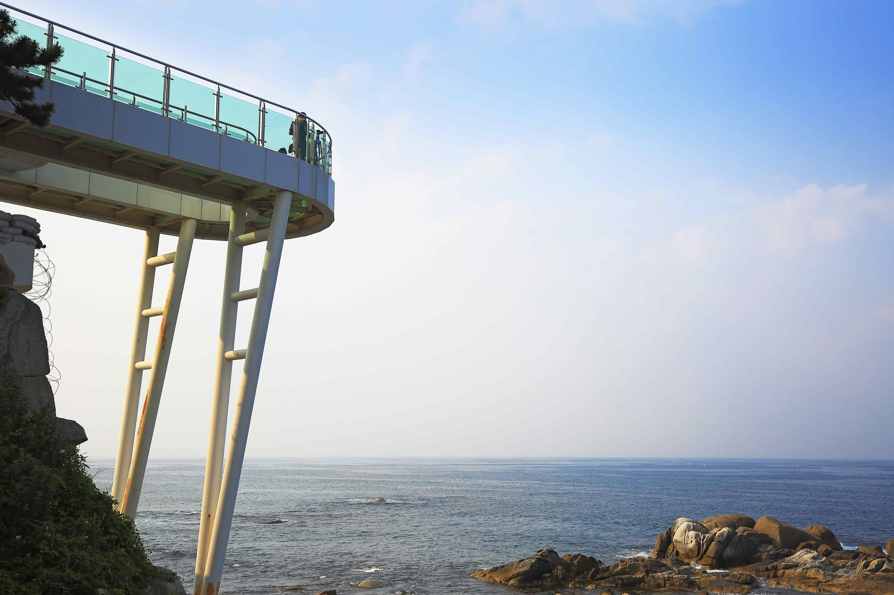
만천하스카이워크
남한강 절벽 위에서 수면 아래를 내려다보며 하늘 길을 걷는 스릴을 느낄 수 있는 곳이다. 스카이워크 뿐만 아니라, 짚라인도 함께 경험해볼 수 있다.
-
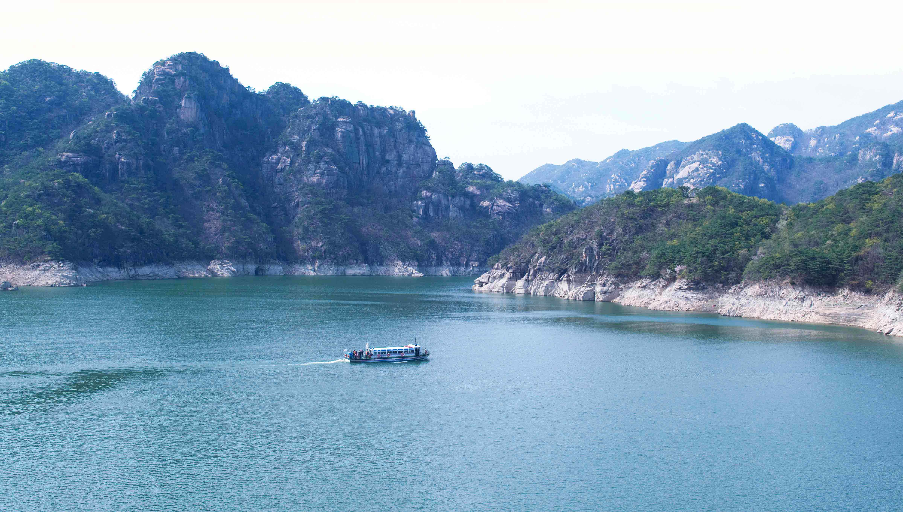
충주호 유람선 장회나루
장회지구에서 유일하게 유람선 허가를 받은 곳으로 안전한 관광을 할 수 있다. 장회나루 주변 절경을 한눈에 볼 수 있어 색다른 경험을 할 수 있다.
- 드라이브 코스
- 자연경관과 가을 정취를 즐길 수 있는 드라이브 코스
-
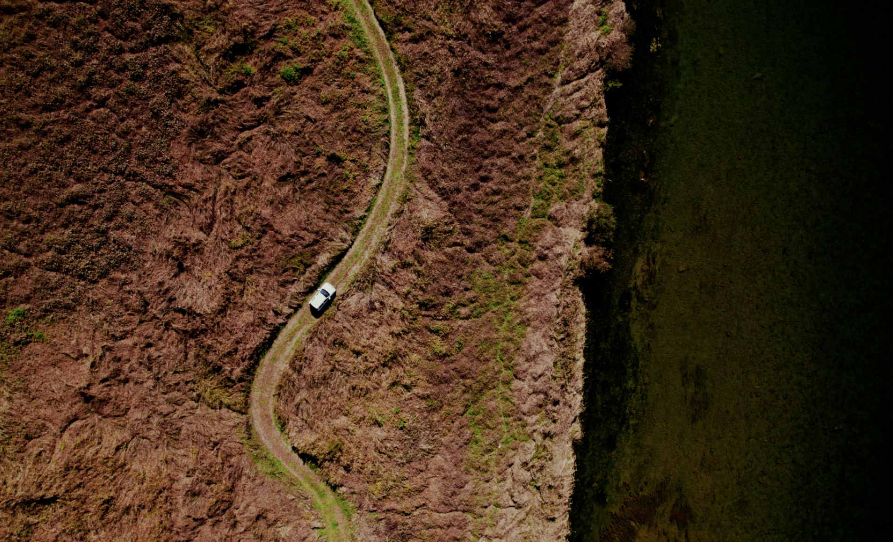
단양호 달맞이길
지난 5월 개통된 곳으로, 단양강 줄기를 따라 단양역부터 단양읍 국도를 활용한 곳이다. 탐방로는 물론 자전거 길을 조성해 라이딩을 하기에도 좋다.
-
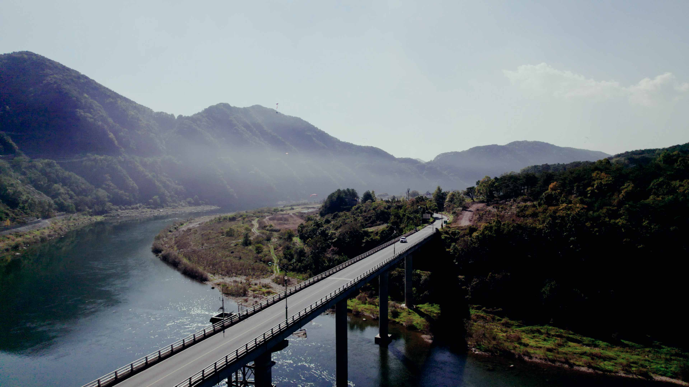
선암계곡길
단양의 4경(상선암, 중선암,하선암, 사인암)을 한번에 만날 수 있는 길이다. 산으로 둘러쌓여 있고, 중간중간 맑은 계곡을 감상할 수 있어 인기가 많은 드라이브 코스이다.
-
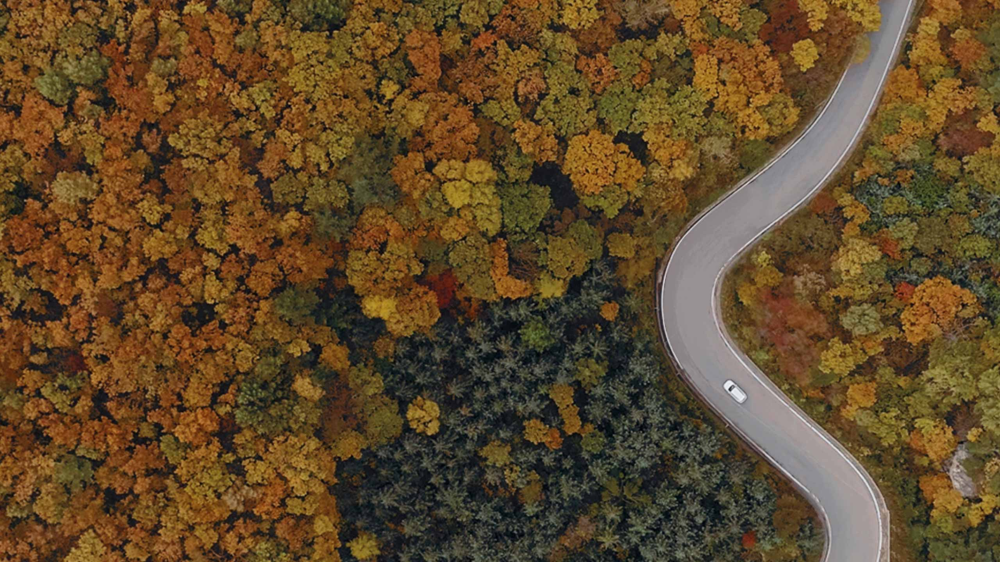
가곡 보발재
매년 10월~11월이 되면 온 세상이 붉게 물드는 단풍의 성지 가곡 보발재는 그 인기에 걸맞게 드라이브 코스로도 유명한 곳이다. 수천 그루의 단풍나무를 볼 수 있다.
- 카페
- 단양의 카페는 도시의 카페와 사뭇 다름을 느낄 수 있다. 시원한 가을 날씨를 느끼면서 마시는 따뜻한 커피 한 잔의 여유를 즐길 수 있는 곳들을 추천한다.
-
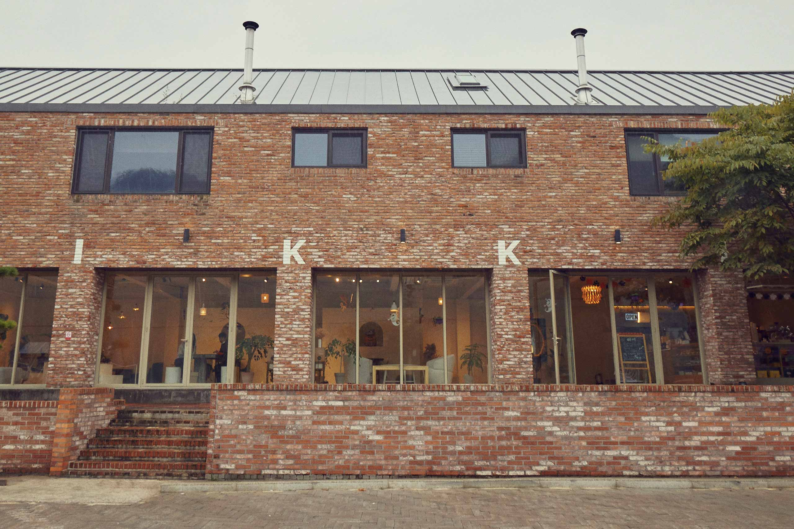
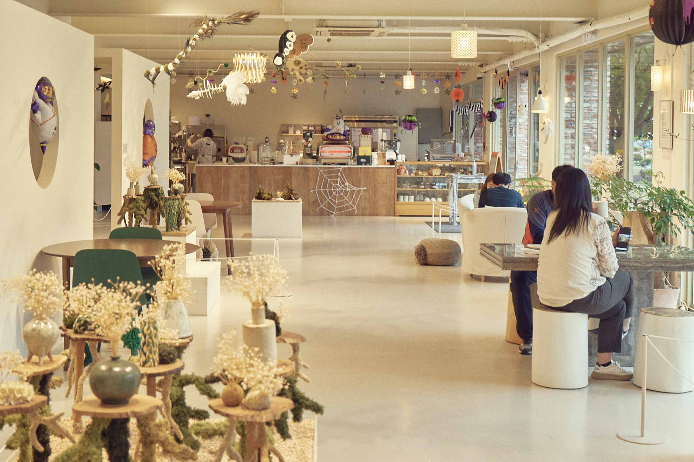
이끼베이커리 @ikkibakery
시야가 탁 트인 통유리와 붉은 벽돌이 어우러진 베이커리 카페이다.이끼를 활용한 다양한 소품을 감상하는 재미가 쏠쏠하다.
-
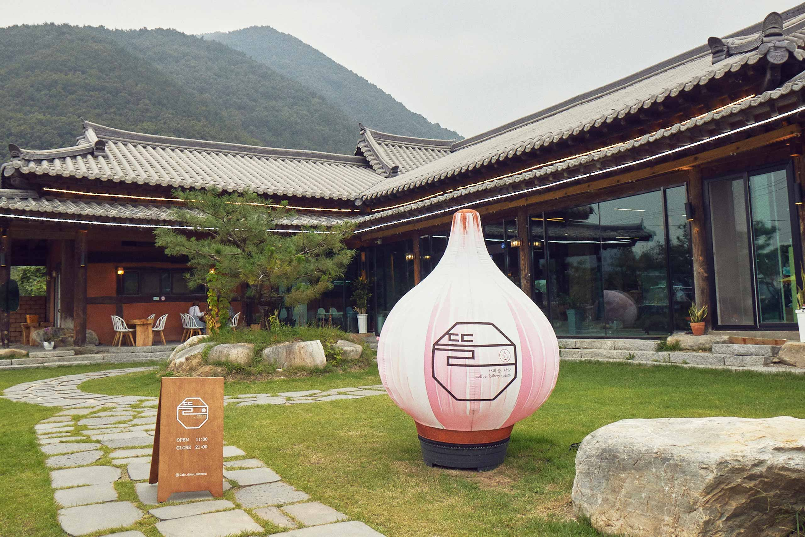
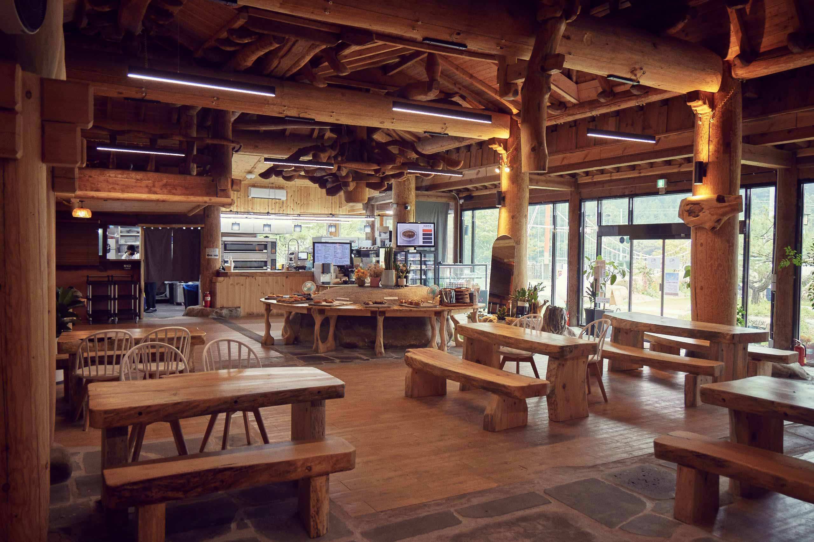
카페 뜰, 단양 @cafe_ddeul_danyang
식사부터 커피까지 모두 해결할 수 있는 곳이다. 한옥으로 되어있어 옛 정취를 느끼기엔 안성맞춤이다.
-
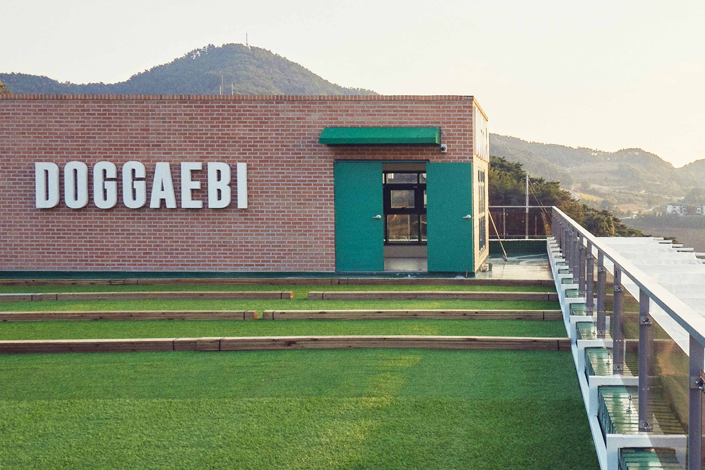
도깨비카페
뷰맛집으로 유명한 곳으로 루프트탑에서 탁 트인 풍경을 감상할 수 있는 곳이다. 다양한 디저트가 준비되어 있어 먹는 즐거움도 경험할 수 있다.
- 쏘카존
- 단양역 주변을 중심으로 세 곳의 쏘카존이 분포되어 있다.